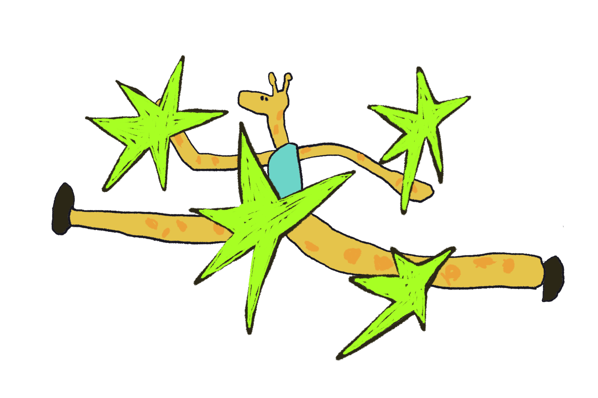

Toby Lam
林康淇，畢業於香港中文大學，獲藝術文學碩士及環境科學理學士學位。
喜歡文字、畫畫、社區與文字，從日常生活中感受各種隱隱作動的啟示，嘗試記錄城市與生活裡反覆出現的符號，抽離當中的形狀與痛感，還原生命中的片段與故事。
創作媒介以繪畫、攝影及影像為主。藝術創作主要探究世界與自身之間的關係，包括母職（motherhood）與故土（homeland）等主題。其創作深受卡爾維諾（Italo Calvino）的《看不見的城市》及巴舍拉（Gaston Bachelard）的《空間詩學》影響，著迷於詩意意象與象徵符號的轉化與建構。
2024年創立空間客舍（Slow Pace Studio），以社區營造為核心，透過展覽、讀書會、放映會、音樂會及思辨聚會等活動，探索城市、人與空間的關係。她關注城市空間如何在「可為」與「不可為」之間被實踐，並思考當中所涉及的權力關係與對話。
空間客舍透過不同的空間實驗，嘗試建立金錢以外的交換模式，以「技能交換」作為使用空間的途徑。參與者可依循自身興趣策劃及舉辦活動，並透過分享技能，參與他人的活動、使用空間或借用工具，從而形成互助共學的循環網絡，以及持續流動的社群力量。
Lam Hong Ki holds a Master of Arts in Fine Arts and a Bachelor of Science in Environmental Science from The Chinese University of Hong Kong.
Interested in writing, painting, community building, she draws inspiration from the subtle impulses of everyday life. Through her practice, she documents recurring symbols found in the city and daily experiences, extracting their forms and traces of pain in an attempt to recover fragments of stories embedded in life.
Working primarily with painting, photography, and moving images, her artistic practice explores the relationship between the self and the world, with a particular focus on motherhood and homeland. Her work is deeply influenced by Invisible Cities by Italo Calvino and The Poetics of Space by Gaston Bachelard, and is driven by an enduring fascination with poetic imagery and symbolic forms.
In 2024, she founded Slow Pace Studio, a community-oriented space dedicated to placemaking and collective cultural engagement. Through exhibitions, reading groups, film screenings, concerts, and discussion gatherings, the studio explores the relationships between people and urban space. Her work examines how cities are practiced and negotiated between what is permitted and what is restricted, and the power dynamics embedded within these interactions.
Through a series of spatial experiments, Slow Pace Studio seeks to cultivate alternative modes of exchange beyond monetary transactions. Using a skill-exchange model as a means of accessing the space, participants are encouraged to organize activities based on their interests, share their knowledge and abilities, join events hosted by others, use the space, or borrow tools. In doing so, the studio fosters a cycle of mutual learning and community building.